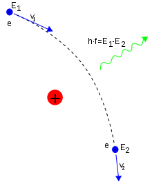

韧致辐射又称刹车辐射或制动辐射（英语：Bremsstrahlung, braking radiation，德语：Bremsstrahlung），原指高速运动的电子骤然减速时发出的辐射，
后来泛指带电粒子与原子或原子核发生碰撞时突然减速发出的辐射。根据经典电动力学，带电粒子作加速或减速运动时必然伴随电磁辐射。其中，又将遵循麦
克斯韦分布的电子所产生热轫致辐射。
轫致辐射的X射线谱往往是连续谱，这是由于在作为靶子的原子核电磁场作用下，带电粒子的速度是连续变
化的。轫致辐射的强度与靶核电荷的平方成正比，与带电粒子质量的平方成反比。因此重的粒子产生的轫致
辐射往往远远小于电子的轫致辐射。
轫致辐射广泛应用于医学和工业。在工业上，经常使用熔点高、导热好、原子序数比较大的钨作为X射线管
的阳极靶。而医疗上的X射线机大多为制动辐射。原理为将高能量电子打在固定靶上，电子突然减速，能量
转换为X射线与热能。在天体物理学上，轫致辐射是很常见的辐射，一些X射线源（如X射线脉冲星、太阳耀
斑）的辐射就属于轫致辐射。

带电粒子在真空中有正或负的加速度时，会以电磁辐射的形式释放能量，这在拉莫方程式中及其相对论一般化中所描述。尽管术语“轫致辐射”
通常是保留给带电粒子在物质中加速，而不是在真空中，但是方程式是相似的。（在这方面，轫致辐射不同于切伦科夫辐射，切伦科夫辐射是
另外一种制动辐射,只发生在物质中，而不是在真空中进行。）
在X射线管中，电子在真空中通过电场被加速并被射入的金属片（“靶材”（target））。X射线被在金属中减速的电子所发射。输出频谱包含X射线的连续频谱，并在一定的能量之处有尖峰（参照右图）。
相关内容：医学辐射-1X 射线
发射β粒子的物质有时会表现出有连续光谱的微弱辐射是因为轫致辐射。
相关内容:辐射屏蔽第二节-贝塔（β）辐射
根据 ICRP，有效剂量的主要用途是用于规划和优化辐射防护的前瞻性剂量评估，以及用于监管目的的剂量限值合规性证明。因此，有效剂量是用于监管目的的中心剂量。
iCRP 还表示，有效剂量对辐射防护做出了重大贡献，因为它能够将来自各种类型外部辐射的全身和局部照射以及放射性核素摄入的剂量相加。
人体局部或非均匀照射需要计算有效剂量，因为当量剂量不考虑受照组织，只考虑辐射类型。不同的身体组织以不同的方式对电离辐射作出反应，因此 ICRP 为特定的组织
和器官分配了敏感因子，以便在已知照射区域的情况下计算局部照射的影响。仅照射身体一部分的辐射场比同一场照射全身的风险要低。考虑到这一点，计算并求和已被辐
照的身体组成部分的有效剂量。这成为全身的有效剂量，剂量E. 它是可以计算但实际上无法测量的“保护”剂量。
有效剂量可以计算为待积剂量，即因吸入、摄入或注射放射性物质而产生的内部剂量。

实践中，因放射性照射引起的随机性效应（癌症等疾病）的发生概率与当量剂量之间的关系还与受照组织或器官有关，因为各种组织
器官对射线的敏感度是不一样的，而人体受到的任何照射几乎总是不止涉及到一个器官或组织。为了计算辐射给受到照射的有关器官
和组织带来的总的危险，在辐射防护中引入了组织权重因子这一概念，有效剂量就是考虑了这一因素后产生的，可以说这是一个既考
虑了射线种类也考虑了器官组织权重因子的量。有效剂量单位的专门名称也是希沃特(Sievert)，简称“希”，符号是“Sv”。